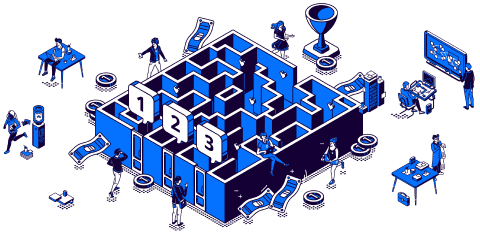

What you can do with coinseeker.co?
Stay at the forefront of innovation
With our in-depth industry research and ever growing knowledge base, you’ll never be left behind again.
Discover new deals
Real-time database of blockchain start-ups, powered by our proprietary algorithms crawling the net.
Secure your investors
With our extensive investor network, you will be automatically matched by relevancy to the right investors.
All the tools you and your team need, without the complexity
Boost your efficiency using our project management tool with well-defined workflow and qualified leads
- Manage your deal flows
- Customise your dashboard
- Extremely easy to use - with little to no learning curve
- Reach out to projects effectively
Company Profiles
Conduct in-depth company analysis with all the essential information in one page:
- View details on companies’ funding rounds
- Dive deeper into the companies' socials
- Discover businesses seeking financing, services, or a partner for a CEX listing. Get started
Access the most comprehensive database of blockchain start-ups on the top chains, trusted by leaders of the venture capital & blockchain space
Get Instant Access NowFAQs
Everything you need to know about blockchain world
Blockchain companies, in other words, Web 3 companies are those working in the next generation of the internet, helping to revolutionize the web through blockchain technology and decentralized applications. These companies aim at creating an open and transparent internet environment, in which users will have more control over their data and can interact with others more privately and securely .
Blockchain company fundraising plays a crucial role in supporting the development and growth of these companies, providing them with the necessary financial resources to realize their ideas and vision, build the required infrastructure, and fuel innovation in the blockchain space. By engaging in blockchain company fundraising, these companies can raise capital from various sources such as ICOs, IEOs, Venture Capital, Crowdfunding, and other funding models, allowing them to bring their innovative blockchain projects to fruition.
Some of the most well-known Web 3 projects include Ethereum, Filecoin, ChainLink, Cardano, etc. If you are looking to discover the best Web 3 projects before everyone else, check out our best crypto fundraising database, which includes a comprehensive list of the most promising blockchain companies engaged in blockchain fundraising.
Blockchain funding or blockchain company fundraising is the process of how crypto and blockchain-based projects raise their capital. Blockchain funding can offer blockchain startups and unicorns essential financial resources to develop and launch their ideas and vision, construct the necessary infrastructure, and fuel innovation in the blockchain space. Some of the most famous blockchain company fundraising models include ICOs, IEOs, Venture Capital, Crowdfunding, and more.
However, to navigate the world of crypto investing effectively, it is vital to have access to reliable crypto fundraising data and a comprehensive crypto fundraising database. Such resources provide valuable information on funding rounds, investment trends, and the overall landscape of crypto company fundraising. By leveraging a reputable funding rounds database or a well-curated funding rounds list, investors and blockchain enthusiasts can stay informed about recent crypto funding rounds and identify potential investment opportunities.
Crypto venture capital financing refers to the process of how funds are raised from investors for cryptocurrency or blockchain-related projects and companies. This term is similar to traditional venture capital financing, but it has the advantage of tapping into a global pool of investors.
Crypto venture capital financing can be used to accelerate development, initiate a project, hire people, or plan for an initial coin offering (ICO), depending on the demand of each firm. For the most part, blockchain company fundraising aims at investing in early-stage blockchain startups. This process involves the purchase of shares or tokens in the project, giving investors a stake in the company's future success. To explore a wide range of crypto startup funding and to access a comprehensive web3 fundraising database, investors can refer to reputable sources that provide insights into the Web 3 fundraising landscape such as Coinseeker.
Web 3 & Blockchain company fundraising can take several forms, including:
Seed funding is the first funding round in which companies sell their token to first-hand investors to raise initial capital. Seed round funding can come from the founders' assets, funding from friends and family, angel investors, and VCs. Additionally, a blockchain company can have multiple seed round funding, making it a common practice in the blockchain space.
Crypto private sale is a fundraising round where blockchain companies sell their limited amount of digital tokens or coins to a selected group of investors at a discounted rate, a strategy commonly utilized in blockchain company fundraising. These sales are typically unplanned and hidden from the general public, making them an exclusive opportunity for early investors.
Crypto Series A funding is the next fundraising round for startups that have already received seed funding and are looking for further funds to grow their firm. Series A finance in the context of cryptocurrencies is used to test the business idea on a greater scale with a larger audience, geography, and workforce, expanding the opportunities for blockchain company fundraising. Accessing a reliable web3 fundraising database can provide insights into the companies currently engaged in Series A funding rounds.
Crypto Series B funding is the second round of funding for a company that has met certain milestones and is past the initial startup stage. Series B investors usually pay a higher share price for investing in the company than Series A investors, demonstrating continued interest and support in blockchain company fundraising efforts.
If a blockchain startup seeks Series C capital, it may be trying to grow into new markets or business areas or both. Series C fundraising round may also be used to prepare for an Initial Public Offering (IPO), showcasing the significance of blockchain company fundraising in preparing for public market expansion. Such market expansions and acquisitions will assist boost the company's share price before the IPO. Staying informed about recent crypto funding rounds is crucial for investors seeking opportunities in blockchain company fundraising.
Ideally, a cryptocurrency company would not require Series D capital because the earlier rounds are expected to cover all expansion needs. However, both favorable and negative conditions can force a cryptocurrency company to pursue a Series D round of capital, demonstrating the flexibility and adaptability of blockchain company fundraising strategies in response to market conditions.
It’s important to note that the cryptocurrency and blockchain industry is dynamic and constantly evolving, with new funds and investment data updating regularly. Therefore, determining the world's largest crypto fund can be challenging.
There are top new blockchain company fundraising that you can follow in 2023. Please take into account that this is not financial advice!
If you are searching for significant blockchain company fundraising to follow their portfolio, definitely check out the top blockchain & crypto investors. Moreover, if you want to diversify your investment in blockchain companies, visit our top and most recent fundraising rounds of crypto companies in 2023.
You can find investors in the blockchain space in different ways. Firstly, you can attend blockchain & web 3 conferences and events. These are great places where you can find many investors, venture capitalists, and angel investors who are in search of promising projects to invest in. Secondly, try to engage in different blockchain & web 3 communities and forums such as Bitcointalk, Reddit's r/CryptoCurrency, and specialized blockchain Telegram and Discord channels. These platforms provide valuable opportunities to connect with individuals interested in blockchain company fundraising.
Next, you should make use of social media platforms like Twitter and LinkedIn to connect with individuals who might have an interest in investing in blockchain projects or participate in blockchain company fundraising. Explore relevant hashtags and groups to discover potential investors in the blockchain industry. Additionally, you can reach out to Blockchain-focused Venture Capital firms. Research VC firms that specialize in blockchain and cryptocurrency investing. Examine their investment portfolios to see if your concept fits their investment criteria and then contact them through their websites.
Furthermore, you can save time and tons of effort by following blockchain fundraising platforms like Coinseeker. With our extensive investor network, Coinseeker can help you to get matched to the right investors interested in blockchain company fundraising with ease. Discover all the tools you and your team need, without the complexity today. By leveraging these strategies and platforms, you can increase your chances of finding suitable investors for your blockchain project or company.
It is challenging to determine the single most successful blockchain project, as success can be measured in various ways. With the blockchain industry rapidly evolving, we do not have any specific most successful blockchain companies in mind when it comes to blockchain company fundraising.
If you are looking for crypto projects that have just completed fundraising and are interested in blockchain company fundraising, you should check out our list of the most recent crypto company fundraising rounds, including those focused on blockchain technology. These rounds highlight promising projects that have successfully raised funds to support their development and growth. Otherwise, if you are looking for upcoming opportunities and want to explore promising blockchain projects, you definitely don't want to miss out on our list of top upcoming crypto funding rounds, which includes blockchain company fundraising initiatives. Keep an eye on these rounds to stay informed about potential investment opportunities in the blockchain space.